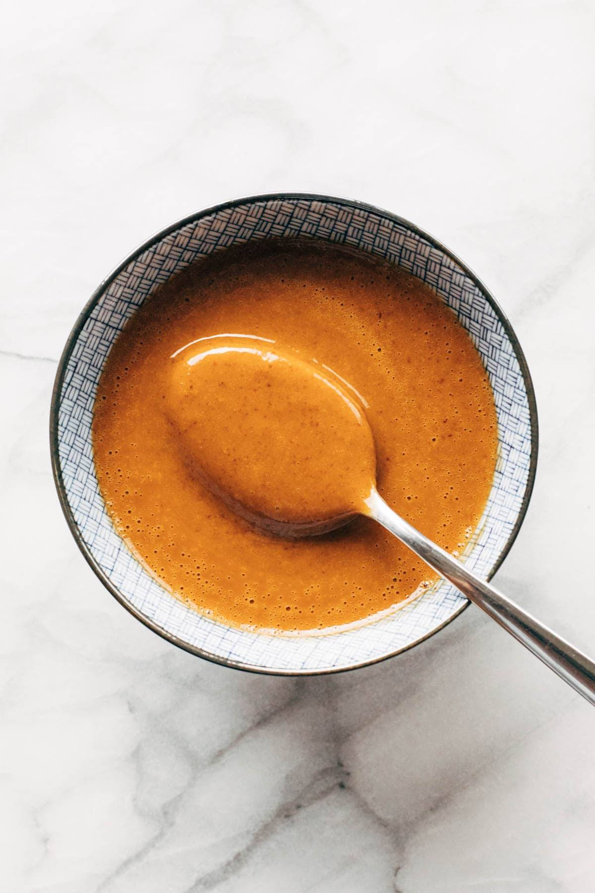

Peanut Butter Sauce

Photo by Kobby Mendez on Unsplash
Description
Who doesn't love peanut butter sauce on vanilla icecream? Add a drizzle of chocolate syrup and you have a Reese's-inspired icecream party!
This recipe is dead simple to make and can be whipped up in about a minute.
Ingredients
- 1 tbsp creamy peanut butter
- 2 tbsp corn syrup
Steps
- Mix ingredients. Combine the peanut butter and corn syrup in a small microwave-safe bowl or cup.
- Warm. Microwave for 20 seconds to warm up the mixture.
- Stir. Stir the mixture until it is smooth and creamy.
- Enjoy. Pour over icecream and indulge!